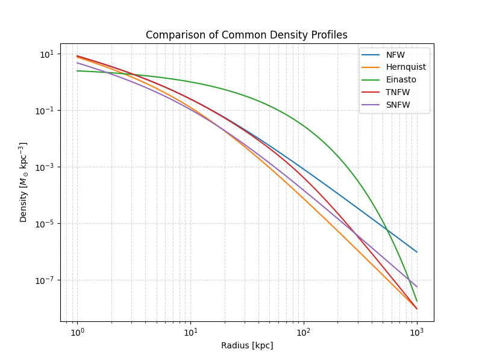

Note
Go to the end to download the full example code.
Comparing Common Density Profiles#
This example compares several widely used spherically symmetric density profiles in astrophysics:
We plot the radial dependence of density on log–log axes to highlight differences in the central cusp/core and outer slope behavior. In doing so, we see how users can easily instantiate and evaluate these profiles using the pisces package. For more detailed documentation on profiles, see profiles_overview.
import matplotlib.pyplot as plt
Setup#
We’ll need to import the relevant profile classes as well as standard
scientific Python packages. We’ll use unyt for unit handling, numpy
for numerical operations, and matplotlib for plotting. We can import all
of the relevant profiles from the density module.
import numpy as np
import unyt
from pisces.profiles.density import (
EinastoDensityProfile,
HernquistDensityProfile,
NFWDensityProfile,
SNFWDensityProfile,
TNFWDensityProfile,
)
Building Profiles#
To create instances of a particular radial profile, we simply need to specify the relevant parameters. Each profile class has a different set of parameters, but they all share a common interface for evaluation.
# Define a set of characteristic quantities that we'll use as
# parameters for the different profiles.
rho_0 = unyt.unyt_quantity(1.0, "Msun/kpc**3") # Characteristic density
r_s = unyt.unyt_quantity(10.0, "kpc") # Scale radius
r_t = unyt.unyt_quantity(100.0, "kpc") # Tidal radius for TNFW
M = unyt.unyt_quantity(1e4, "Msun") # Total mass for SNFW
profiles = {
"NFW": NFWDensityProfile(rho_0=rho_0, r_s=r_s),
"Hernquist": HernquistDensityProfile(rho_0=rho_0, r_s=r_s),
"Einasto": EinastoDensityProfile(rho_0=rho_0, r_s=r_s, alpha=0.6),
"TNFW": TNFWDensityProfile(rho_0=rho_0, r_s=r_s, r_t=r_t),
"SNFW": SNFWDensityProfile(M=M, a=r_s),
}
Plot Density Profiles#
We’ll now evaluate and plot the density profiles over a range of radii. We’ll use logarithmic axes to clearly show differences in the inner and outer slopes.
r = unyt.unyt_array(np.logspace(0, 3, 500), "kpc") # Radii from 1 kpc to 1000 kpc
plt.figure(figsize=(8, 6))
for name, profile in profiles.items():
rho = profile(r).to("Msun/kpc**3")
plt.loglog(r.to("kpc"), rho, label=name)
plt.xlabel("Radius [kpc]")
plt.ylabel(r"Density [$M_\odot \, {\rm kpc^{-3}}$]")
plt.title("Comparison of Common Density Profiles")
plt.legend()
plt.grid(True, which="both", ls="--", alpha=0.5)
plt.show()

Total running time of the script: (0 minutes 0.312 seconds)